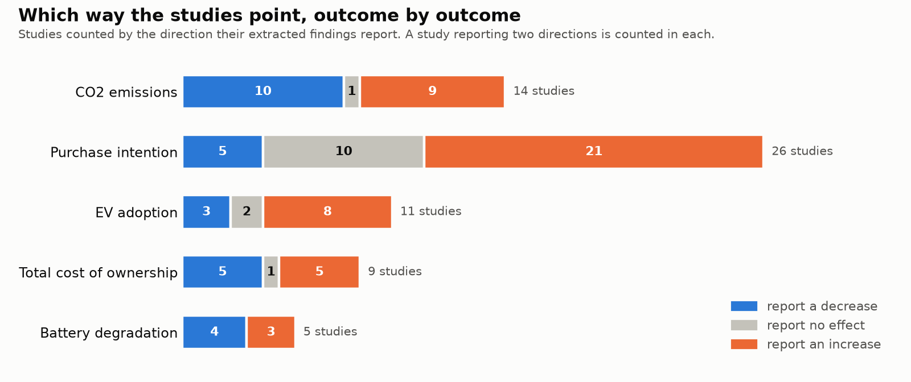
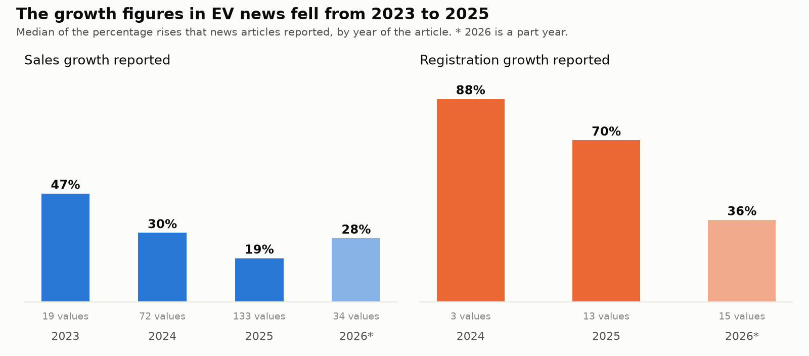

Electric vehicles: what studies found and what the news reported
Two extraction layers, read side by side. Prism stores the individual findings extracted from research papers and the
individual figures extracted from news articles. This page groups them by angle and quotes them as stored.
Every count is computed from stored findings; every quoted line is copied, not written.
What was read: 5,121 extracted findings from the papers of six research scopes, one per angle (2,726 paper slots; a paper can sit in more than one angle), and 4,545 extracted figures from 949 of the 4,703 news articles on electric vehicles between 2021-06-01 and 2026-06-01.
The short version
Emissions depend on the electricity. The largest group of findings says EVs cut emissions; the second largest names the cases where they do not: coal-heavy grids, isolated island systems, and the extra emissions of building the battery.
Fast charging costs battery life; managed charging helps. Studies report that high charging rates speed up degradation, and that scheduled or smart charging lowers charging cost and emissions.
Price-led charging can backfire on the grid. Three studies warn that charging which simply follows the cheapest electricity bunches cars into new peaks.
Cheaper to own is a local answer. Total cost of ownership came out lower in some places and higher in others, and one US study found it varies by nearly 40% between cities.
People buy on control and usefulness, not on subsidies alone. Twenty-one studies found a factor that raised purchase intention; ten found factors with no effect, subsidies among them.
In the news, the growth numbers shrank. The typical sales rise reported fell from 47% in 2023 to 19% in 2025, while reports of falling sales became more common.

Read the bars with care: a study is counted for the direction its finding reports, whatever the cause it studied. On CO2 emissions, some of the "increase" findings are about economic growth or energy use, not about the vehicle. The quoted findings below say which is which.
1. Emissions
Counted from the findings
On CO2 emissions, 14 studies report a direction: 10 a decrease, 1 no effect, 9 an increase.
EVs cut emissions, and more so on clean power (187 findings from 139 papers; a related group, 37 findings from 24 papers)
"The findings of this paper suggest that EVs have the potential to significantly reduce greenhouse gas emissions and improve air quality, but their overall environmental impact depends on factors such as the source of electricity used to power them, and the materials used in their production." — Impact of Electronic Vehicles on Environment, 2023
"Rapid and ultra-rapid charging cause more degradation of the most common electric vehicle batteries than fast charging, though battery management systems limit this degradation to an extent." — Impact of Charging Rates on Electric Vehicle Battery Life, 2021
"Among 170 Portuguese consumers, higher fuel cost, closer charging places and better battery lifetime perception were positively related to their intention to buy an electric car." — Determinants of Electric Car Purchase Intention in Portugal, 2020
The barriers named most often (40 findings from 26 papers)
"Lack of charging stations and limited driving range, reduced air pollution, and availability of policy incentives were the most cited factors affecting EV adoption." — Adoption of electric vehicles: A state-of-art review, 2023
What the news reported
From 4,703 articles on electric vehicles in the five years to 2026-06-01; 949 of them have extracted figures so far.

Sales: still rising, by less
106 articles report sales rising: median 25%, middle half 9.54% to 50% (258 values). The yearly median moved from 47% in 2023 to 27.7% in 2026 (19 and 34 values).
55 articles report sales falling: median 12%, middle half 6% to 27% (99 values). The yearly median moved from 11% in 2024 to 25% in 2026 (13 and 15 values).
"Electric passenger vehicle (PV) retail sales in India grew 75.14 per cent year-on-year (y-o-y) at 23,506 units in April 2026 as compared to 13,421 units in the same month last year, Federation of Automobile Dealers Associations (FADA) said on Wednesday." — news article of 2026-05-06
"While new data highlights a 25% year-on-year surge in sales for financial year 2026, reaching 24.5 lakh units, the industry still grapples with a market penetration of just 7.6%." — news article of 2026-04-21
"EVs claim market share Market data released today shows 15,839 battery electric vehicles were sold in March, a 42 per cent increase to the previous month." — news article of 2026-04-07
"Between January and April this year, Tesla's retail sales in China fell 15.05% year-on-year." — news article of 2026-05-22
"A new report on electric vehicle sales for the first week of December showed a 17% annual decline in EV and hybrid sales in China, amid a broader—and deeper—decline in overall car sales." — news article of 2025-12-12
"In Europe, sales of electric-only cars fell 5.8% in January-September from a year earlier, while their market share fell to 13% from 14%." — news article of 2025-07-27
Share of new cars, market by market
The share figures in the news measure different things (a country, a brand, a target), so they are quoted here one by one and not averaged.
"Norway saw a new monthly record in April with electric vehicles accounting for 98.6 per cent of all new passenger car registrations." — news article of 2026-05-05
"Data from the European Automobile Manufacturers’ Association (ACEA) shows battery-electric vehicles accounted for 19.4% of EU market share in the first quarter of 2026, up from 15.2% in the same period a year earlier, with 546,937 new registrations recorded." — news article of 2026-05-13
"The rollout comes against a backdrop of accelerating EV adoption, with electric cars accounting for 23.4 per cent of new UK registrations in 2025, according to Zapmap data." — news article of 2026-04-25
"The auto industry body said that the electric PVs now contributed 5.8 per cent to the overall PV market in India, as compared to 3.7 per cent April 2025." — news article of 2026-05-06
"China is the exception. Driven by government subsidies and mandates, vehicles with electric motors, including plug-in hybrids that combine electric and fossil fuel motors, topped 50% of sales in the month of July." — news article of 2025-07-27
"EVs accounted for about 8 per cent of new vehicles sales in the U.S. last year, but factors such as cost and charging infrastructure remain concerns for mainstream buyers." — news article of 2025-12-15
"Electric car sales are rising fast and battery-powered vehicles now account for more than 13.4 per cent of new car sales across Europe, according to figures from the first quarter of this year." — news article of 2023-04-24
Registrations
15 articles report registrations rising: median 43.5%, middle half 28.9% to 111% (31 values). The yearly median moved from 88% in 2024 to 35.6% in 2026 (3 and 15 values).
"Germany specifically saw battery-electric registrations grow 41.3% during the quarter." — news article of 2026-05-13
"New electric van (EV) registrations continued their strong upward trajectory, rising 41.1% year-on-year to 4,262 units – the most ever recorded in a single month, achieving a market share of 8.9%." — news article of 2025-10-07
"In January, 2025, Tesla recorded a 60 % decline in registrations in Germany, which was once its European fief." — news article of 2025-02-17
Prices
102 articles report vehicle price: median $45,000, middle half $34,010 to $58,124 (247 values); 20 far larger or smaller values left out as another quantity.
29 articles report vehicle price: median €35,560, middle half €23,000 to €44,990 (48 values); 1 far larger or smaller value left out as another quantity.
26 articles report vehicle price: median £38,995, middle half £28,754 to £53,000 (61 values); 1 far larger or smaller value left out as another quantity. The yearly median moved from £40,000 in 2023 to £36,275 in 2026 (3 and 18 values).
Dollar prices include US, Australian and other dollars as printed. Yearly dollar medians barely moved: $43,990 in 2023, $45,295 in 2024, $43,600 in 2025, $45,100 in 2026 (2026 is a part year).
"Prices are estimated to start at just over 23,000 euros, making it affordable for a mass-market electric car." — news article of 2026-04-10
"Under the skin, the still unnamed electric city car will be related to the recently revealed Renault Twingo, but it will be around €2,000 cheaper, with an expected starting price of around €18,000." — news article of 2026-01-15
"With the grant taken into account the new Micra will be priced below £21,500, to compete against the likes of the new Renault 5, as manufacturers introduce a wider range of cheaper EVs to entice people into going electric." — news article of 2025-08-06
20 articles report vehicle price falling: median $7,500, middle half $3,100 to $9,980 (49 values); 3 far larger or smaller values left out as another quantity. The yearly median moved from $3,245 in 2023 to $5,500 in 2026 (12 and 4 values).
"In the past week BMW has taken $8000 off the price of its iX1 and iX2 electric SUVs, and Volvo has also stripped out big dollars from its EX30 and EX40 compact electric SUVs." — news article of 2026-04-10
"The 2026 Ioniq 5 SUV with Tesla NACS port that doesn't need a Lectron adapter to top up at Superchargers, for instance, gets a massive price cut of up to $9,800, for a starting tag of just $35,000 for the base RWD model." — news article of 2025-10-02
"Hyundai counters EV price cuts with new discounts A day after Kia reduced prices on several electric vehicles by up to 3 million won ($2,000) in South Korea last month, Hyundai followed suit." — news article of 2026-02-18
What each layer covers
Research carries the engineering and the evidence on effects. Charging alone has 1,004 grouped findings from 637 papers; only 67 of the extracted news figures mention charging and 24 mention emissions.
News carries the market. Sales, registrations, market share and prices make up most of the extracted news figures (1,219 mention sales, 1,382 a price), which the research findings barely touch.
They meet on adoption. Studies name charging access, range and upfront cost as the barriers; the news figures show where share stands (98.6% of new cars in Norway, about 8% in the US) and makers cutting entry prices.
How to read this page
Findings are extractions. Each quoted line is a finding stored from a paper's abstract, or a sentence stored from a news article. Nothing was read from full texts.
Counts are floors. Research statements count papers cited ten or more times that the topic search matched (up to 600 per topic); the grouped findings come from scopes of papers cited three or more times.
Grouping is by meaning. Findings are grouped by similarity of wording; a group label is its most typical finding, and a group can hold findings that point different ways. The quotes are the evidence, the group sizes are context.
News extraction is still running. About a fifth of the articles on this topic have extracted figures so far, and news figures mix units and scopes.
One partition of the research index was offline on the day of retrieval, so research counts are lower bounds.
Reproduce it
H=(-H "Authorization: Bearer $PRISM_KEY" -H "Content-Type: application/json")
U=https://radar-api.fliarbi.com/prism/v1
# counted statements from the research extraction layer (one narrow topic per call)
curl -s $U/research.insights "${H[@]}" -d '{"topic":"electric vehicle purchase intention","order":"all"}' | jq '.data.statements[].text'
# every finding behind one statement
curl -s $U/research.insights "${H[@]}" -d '{"topic":"electric vehicle purchase intention","behind":"r0-split"}' | jq '.data.statements[0].examples'
# common findings of one angle: open a scope, then group it by meaning
SID=$(curl -s $U/research.scope "${H[@]}" -d '{"topic":"electric vehicle charging","min_cited":3}' | jq -r .data.scope_id)
curl -s $U/research.scope_cluster "${H[@]}" -d "{\"scope_id\":\"$SID\",\"min_sim\":0.72,\"max_groups\":14}" | jq '.data.common_findings[] | {findings, papers, common_finding}'
# counted statements from the news extraction layer, with or without a focus
curl -s $U/news.insights "${H[@]}" -d '{"term":"electric vehicles","focus":"sales","order":"all"}' | jq '.data.statements[].text'
Over MCP the same calls are research_insights, research_scope, research_scope_cluster and news_insights. The statements, groups and quoted findings used on this page are in data.json.